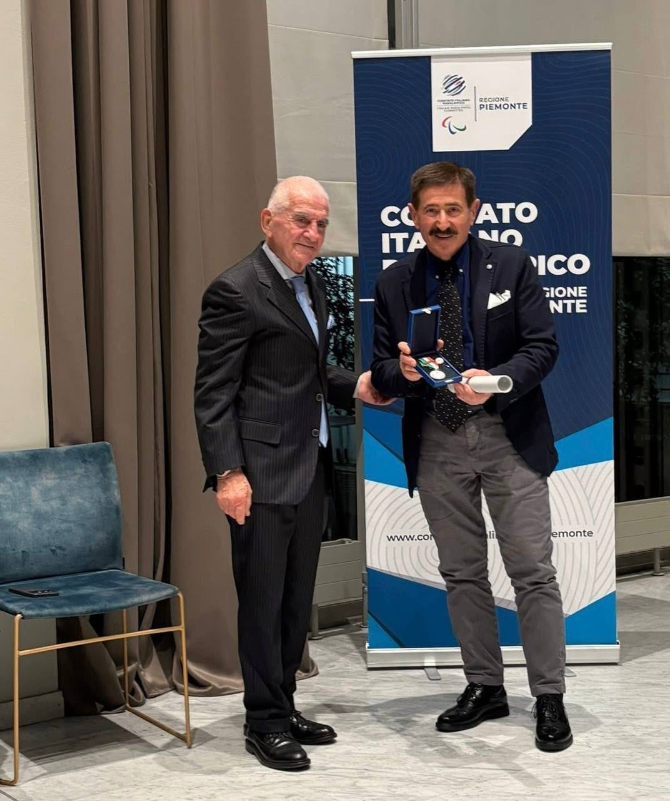
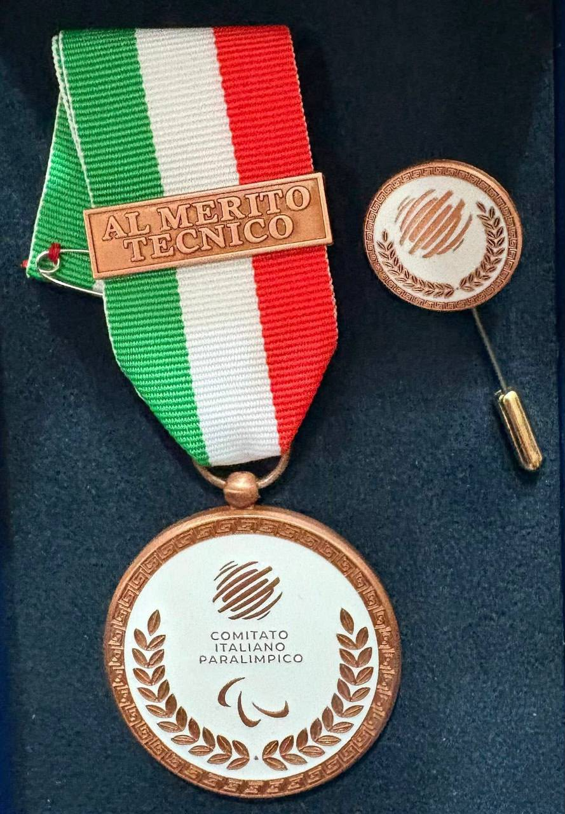

Il Real Fut5al esprime le più sincere congratulazioni al proprio Team Manager, Cav. Gianfranco Conti, insignito della Palma di Bronzo 2024 al Merito Tecnico Paralimpico, conferita dal Comitato Italiano Paralimpico (CIP).
Un riconoscimento prestigioso che celebra una carriera lunga oltre quarant'anni, caratterizzata da passione, professionalità e impegno costante nella crescita del calcio e del futsal delle persone sorde.
Nel corso della sua straordinaria esperienza sportiva, Gianfranco Conti ha ricoperto numerosi ruoli, distinguendosi prima come atleta, successivamente come tecnico e infine come dirigente e manager. Un percorso costellato di successi e riconoscimenti, che lo ha visto protagonista con la Nazionale Italiana FSSI e con società di grande tradizione, tra cui il Bologna e il Real Fut5al.
Da oltre dieci anni, il Cavaliere rappresenta un punto di riferimento fondamentale per la nostra società. La sua esperienza, la cura dei dettagli, la capacità organizzativa e la mentalità vincente hanno contribuito in maniera determinante al raggiungimento di importanti traguardi nazionali e internazionali.
La Palma di Bronzo rappresenta non soltanto il riconoscimento di una carriera, ma anche la testimonianza del valore umano e sportivo di una figura che ha dedicato la propria vita alla crescita degli atleti e dell'intero movimento sportivo delle persone sorde.
Il Real Fut5al è profondamente orgoglioso di poter contare ancora oggi sulla sua presenza, sulla sua competenza e sulla sua visione.
